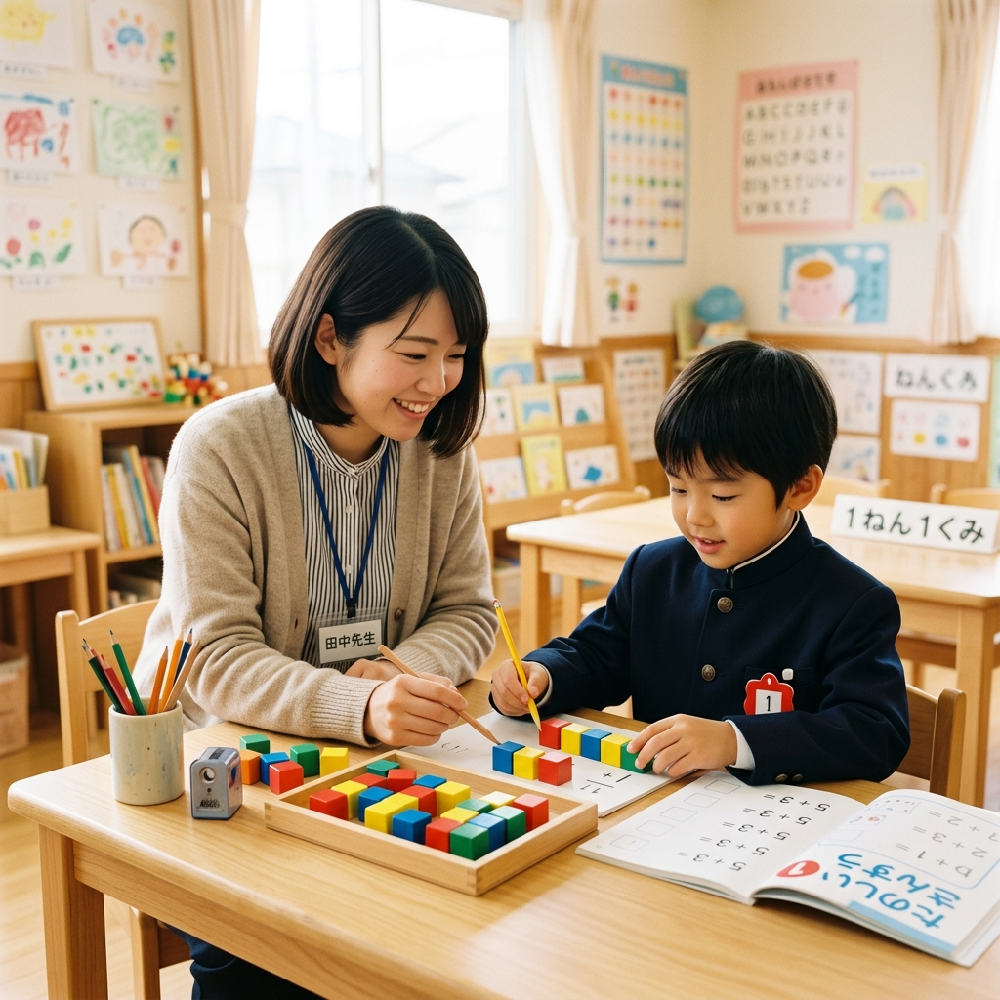
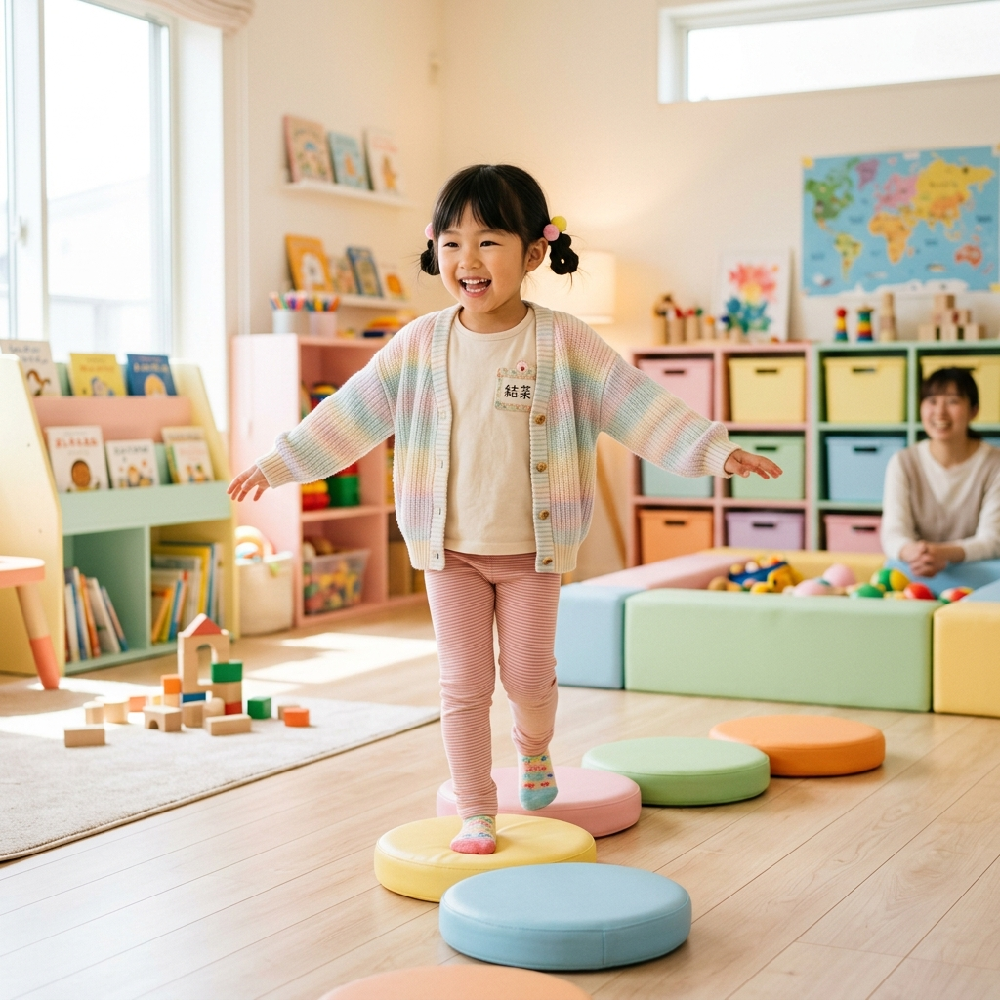

発達支援 × 学習 × コミュニケーションを大切にした個別支援
見学予約はこちら小学生から高校生までのお子さまを対象に、一人ひとりの歩みに寄り添った支援を行います。
挨拶、順番を守ること、自分の気持ちの伝え方など、社会の中で生きる力を育てます。

学校の宿題のサポートはもちろん、つまづきに合わせた基礎学習を丁寧に指導します。

体幹を鍛える運動やバランス遊び、五感を刺激する感覚統合を促す活動を行います。
個別支援計画に基づき、お子さま一人ひとりの興味や課題に合わせたプログラムを提供します。
児童指導員や教員免許保有者などの専門性の高いスタッフがお子さまを温かくサポートします。
一人ひとりの発達段階や特性、ご家族のご要望に合わせたオーダーメイドの支援を行います。
毎日の連絡帳や定期的な面談を通じて成長を共有し、ご家庭と二人三脚で歩みます。
児童指導員：山田
「お子さま一人ひとりの『できた！』という笑顔とペースを一番大切に伴走します」指導員：佐藤
「安心して過ごせる心地よい居場所づくりと、楽しいレクづくりを心がけています」はい、大歓迎です。実際の活動の様子を見学いただき、ご不安な点などを丁寧にお聞きします。まずはお気軽にお問い合わせください。
学校やご自宅までの送迎に対応しております。詳細な送迎対応エリア（○○市内全域等）につきましては、お気軽にご相談ください。
施設の見学や体験利用のご相談など、まずはお気軽にお問い合わせください。
スタッフ一同、心よりお待ちしております。